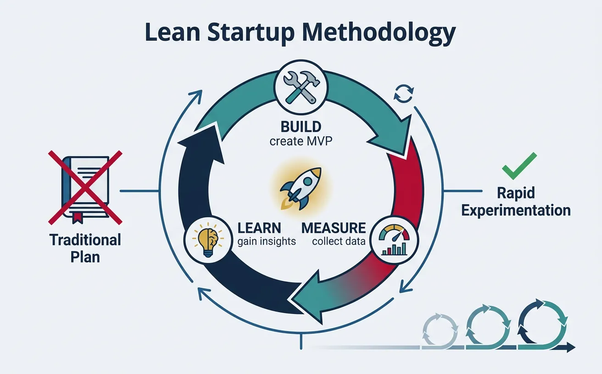
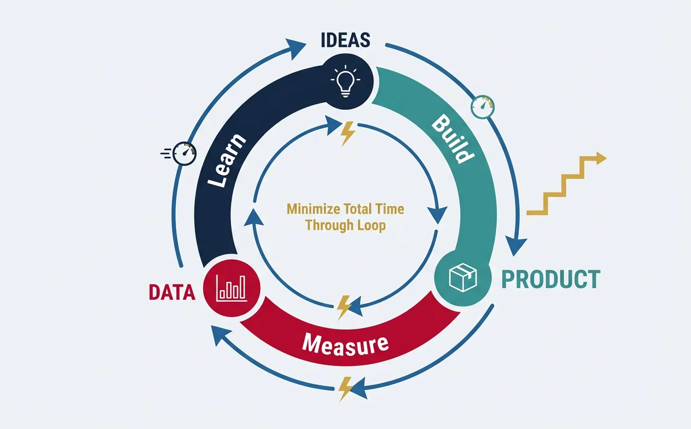
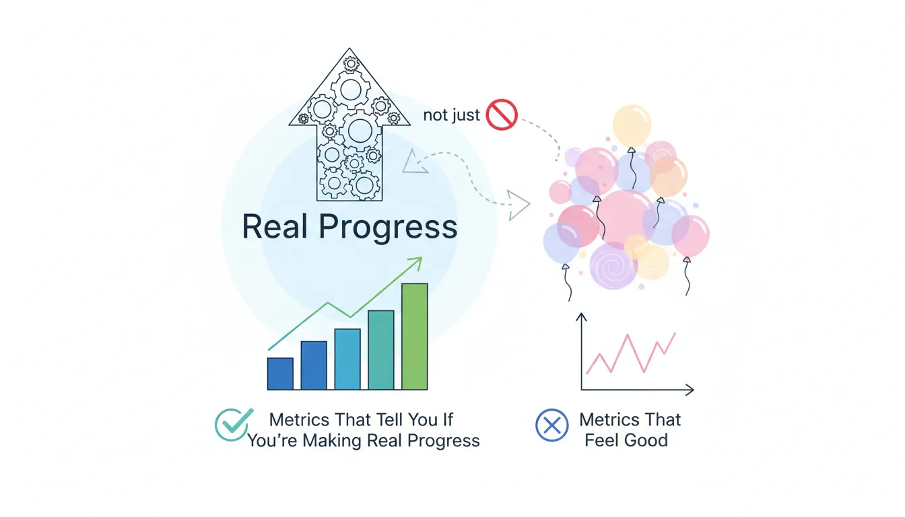
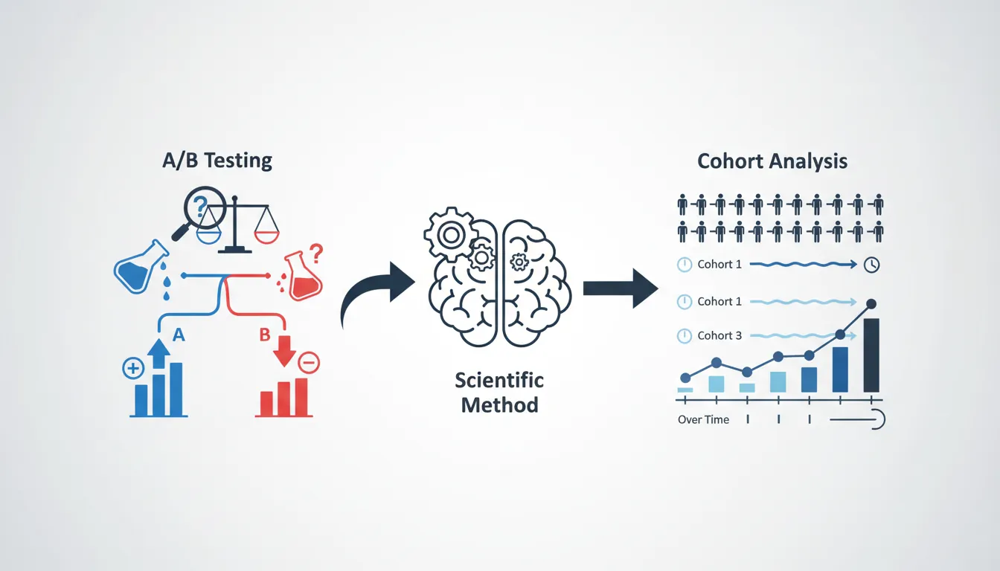

1. Introduction
The Lean Startup methodology revolutionized how entrepreneurs build companies by replacing elaborate business plans with rapid experimentation. This guide covers the core principles and techniques for validated learning.

Complete Startup Journey
Ideation & Opportunity Recognition
Problem discovery, market gaps, idea generation frameworksIdea Validation & MVP Prototyping
Customer discovery, landing pages, prototype testingBusiness Models & Canvas
BMC, lean canvas, revenue models, value propositionsLean Startup Methodology
Build-measure-learn, pivoting, validated learningFundraising & Financial Modeling
VC, angels, SAFE notes, cap tables, financial projectionsBuilding Your Founding Team
Co-founder selection, equity splits, team dynamicsHiring & Company Culture
Recruiting, culture building, OKRs, team scalingScaling Operations & Growth Hacking
Growth loops, viral mechanics, operational scalingMarketing Campaigns & Digital Growth
CAC/LTV, digital marketing, positioning, channelsLegal, Financial & Risk Foundations
Entity structure, IP, compliance, burn rate managementData-Driven Decision Making
SaaS metrics, NPS, analytics dashboards, A/B testingExit Strategies & Investor Pitches
Valuations, pitch decks, M&A, IPO preparationStartup Ecosystem & Networking
Accelerators, mentors, communities, ecosystem mappingInnovation, Technology & Future Trends
Emerging tech, AI/ML, deep tech, future marketsCapstone Projects & Portfolio
Comprehensive startup plan, portfolio presentation2. Build-Measure-Learn Loops
The Build-Measure-Learn loop is the fundamental activity cycle of a Lean Startup. It replaces the traditional "plan then execute" approach with continuous learning through experimentation.

The BML Loop
┌──────────────────┐
│ │
│ IDEAS │
│ │
└────────┬─────────┘
│
▼ BUILD
┌──────────────────┐
│ │
│ PRODUCT │◄─── Minimum Viable Product
│ │ (fastest path to learning)
└────────┬─────────┘
│
▼ MEASURE
┌──────────────────┐
│ │
│ DATA │◄─── Actionable Metrics
│ │ (not vanity metrics)
└────────┬─────────┘
│
▼ LEARN
┌──────────────────┐
│ │
│ INSIGHTS │◄─── Validated Learning
│ │ (pivot or persevere)
└────────┬─────────┘
│
└─────────────► Back to IDEASThe goal is to minimize total time through the loop. A startup that completes 10 loops while a competitor completes 3 has learned 3x more and iterated 3x further.
Loop Optimization Strategies
| Phase | Slow Approach | Fast Approach |
|---|---|---|
| Build | Full feature development (months) | MVP, mockups, concierge (days/weeks) |
| Measure | Wait for statistical significance | Quick qualitative signals + directional data |
| Learn | Analyze reports, hold meetings | Talk to users immediately, decide fast |
Common BML Anti-Patterns
- "Just one more feature": Building without measuring
- Vanity metrics obsession: Measuring without learning
- Analysis paralysis: Learning without building
- Ignoring negative data: Building what you want, not what's validated
3. Hypothesis-Driven Development
Instead of building features because they seem like good ideas, hypothesis-driven development forces you to articulate what you believe and how you'll test it.
The Hypothesis Template
┌─────────────────────────────────────────────────────────────────┐
│ HYPOTHESIS CARD │
├─────────────────────────────────────────────────────────────────┤
│ │
│ HYPOTHESIS NAME: [Short descriptive name] │
│ │
│ WE BELIEVE THAT: [Our assumption] │
│ │
│ FOR: [Target customer segment] │
│ │
│ WILL RESULT IN: [Expected outcome/behavior] │
│ │
│ WE'LL KNOW WE'RE RIGHT WHEN: [Success metric + threshold] │
│ │
│ TEST METHOD: [How we'll test this] │
│ │
│ TIME BOX: [Maximum time to run test] │
│ │
└─────────────────────────────────────────────────────────────────┘Example: Hypothesis in Action
HYPOTHESIS: Same-Day Delivery Value
WE BELIEVE THAT: Offering same-day delivery (vs. next-day) will increase order completion.
FOR: Urban professionals ordering groceries
WILL RESULT IN: Higher conversion from cart to purchase
WE'LL KNOW WE'RE RIGHT WHEN: Conversion rate increases by >15% with same-day option
TEST METHOD: A/B test with 1,000 users per variant
TIME BOX: 2 weeks
Hypothesis Card Builder
Build a structured hypothesis card using the template above. Download it to share with your team.
All data stays in your browser. Nothing is sent to or stored on any server.
Types of Hypotheses
| Hypothesis Type | What It Tests | Example Question |
|---|---|---|
| Problem Hypothesis | Does the problem exist? | "Do busy parents struggle to find healthy meal options?" |
| Solution Hypothesis | Does our solution work? | "Will a weekly meal kit solve the healthy meal problem?" |
| Value Hypothesis | Will customers pay/engage? | "Will parents pay $50/week for pre-portioned ingredients?" |
| Growth Hypothesis | Can we acquire customers? | "Will Facebook ads drive cost-effective signups?" |
4. Rapid Prototyping & Iteration
Prototyping isn't about perfection—it's about learning. The goal is to create something "just real enough" to get genuine reactions.
Prototyping Fidelity Spectrum
Low Fidelity ◄────────────────────────────────► High Fidelity
│ │
▼ ▼
┌─────────┬───────────┬────────────┬─────────────┬───────────┐
│ Sketch │ Wireframe │ Clickable │ Functional │ Full │
│ on │ (Balsamiq │ Prototype │ Prototype │ Product │
│ Napkin │ Figma) │ (InVision) │ (MVP) │ │
└─────────┴───────────┴────────────┴─────────────┴───────────┘
│ │ │ │ │
1 hour 1 day 1 week 2-4 weeks Months+
│ │ │ │ │
Test Test UX Test flow Test value Scale
concept & layout & interest & willingnessIteration Velocity Best Practices
- Ship weekly: Force a cadence of small, frequent releases
- Feature flags: Deploy code without exposing to all users
- One change at a time: Easier to attribute impact
- Kill your darlings: Remove features that don't perform
"The only way to win is to learn faster than anyone else. The lesson of the MVP is that any additional work beyond what was required to start learning is waste."
5. Experimentation Mindset
An experimentation mindset treats every idea as a hypothesis to be tested, not a truth to be defended. This requires both organizational culture and practical frameworks.
Product Experiments
Experiment Types
| Experiment | What It Tests | How to Run |
|---|---|---|
| Smoke Test | Demand exists | Landing page + signup form before building |
| Concierge | Solution works | Manually deliver the service to a few customers |
| Wizard of Oz | UX assumptions | Fake automation with humans behind the scenes |
| Fake Door | Feature interest | Add button that tracks clicks (feature not built yet) |
| Painted Door | Premium interest | Show upgrade option, measure clicks before building tier |
Marketing Experiments
- Channel testing: Test 5 channels with small budgets ($100-500 each), double down on winners
- Message testing: Run 10 headline variations to find what resonates
- Audience testing: Target different segments to find best CAC and conversion
- Landing page variants: Test layout, copy, CTA buttons
Growth Experiments
GROWTH EXPERIMENT FRAMEWORK
┌──────────────────────────────────────────────────────────────┐
│ ACQUISITION │ ACTIVATION │ RETENTION │
│ (Get users) │ (Aha moment) │ (Keep users) │
├─────────────────────┼───────────────────┼────────────────────┤
│ • SEO experiments │ • Onboarding │ • Email sequences │
│ • Paid ads tests │ flow tests │ • Feature │
│ • Referral │ • First-use │ engagement │
│ programs │ experience │ • Re-activation │
│ • Content │ • Tutorial │ campaigns │
│ marketing │ optimization │ • Habit loops │
└─────────────────────┴───────────────────┴────────────────────┘
│
▼
┌──────────────────────────────────────────────────────────────┐
│ REVENUE │ REFERRAL │
│ (Make money) │ (Get referrals) │
├─────────────────────┼────────────────────────────────────────┤
│ • Pricing tests │ • Referral incentives │
│ • Upsell triggers │ • Sharing mechanics │
│ • Plan tiers │ • Viral loops │
│ • Conversion │ • Word-of-mouth │
│ optimization │ amplification │
└─────────────────────┴────────────────────────────────────────┘Experiment Tracker
Track your Build-Measure-Learn experiments. Add multiple experiments and export them.
All data stays in your browser. Nothing is sent to or stored on any server.
6. Metrics for Validated Learning
Validated learning requires metrics that actually tell you if you're making progress—not just metrics that make you feel good.

Actionable vs Vanity Metrics
| Vanity Metric (Avoid) | Actionable Alternative | Why It's Better |
|---|---|---|
| Total registered users | Weekly active users (WAU) | Shows actual engagement, not just signups |
| Page views | Conversion rate | Shows if visits lead to desired actions |
| Total revenue (cumulative) | MRR growth rate | Shows trajectory, not just accumulation |
| App downloads | Day 7 retention | Shows if people actually use the app |
| Social followers | Engagement rate, click-through | Shows if followers take action |
The One Metric That Matters (OMTM)
At any given stage, identify the single most important metric for your business. Focus relentlessly on improving it.
OMTM BY STAGE:
Pre-PMF (Problem-Market Fit)
├── "Do people want this?"
└── Metric: Interview sentiment, waitlist signups
Early PMF (Product-Market Fit)
├── "Do people keep using this?"
└── Metric: Retention rate, NPS, DAU/MAU ratio
Growth Stage
├── "Can we acquire customers profitably?"
└── Metric: CAC payback period, LTV:CAC ratio
Scale Stage
├── "Can we grow efficiently?"
└── Metric: Net Revenue Retention, Rule of 407. A/B Testing & Cohort Analysis
A/B testing (split testing) is the scientific method applied to product decisions. Cohort analysis reveals how user behavior changes over time.

A/B Testing Fundamentals
TRAFFIC
│
▼
┌─────────────────┐
│ RANDOMIZER │
│ (50%/50%) │
└────────┬────────┘
│
┌───────────┴───────────┐
▼ ▼
┌───────────┐ ┌───────────┐
│ CONTROL │ │ VARIANT │
│ (A) │ │ (B) │
│ │ │ │
│ Original │ │ New │
│ design │ │ design │
└─────┬─────┘ └─────┬─────┘
│ │
▼ ▼
┌───────────┐ ┌───────────┐
│ Conversion│ │ Conversion│
│ Rate: 5% │ │ Rate: 7% │
└───────────┘ └───────────┘
│
▼
Statistical Significance?
If yes → Ship B (winner)
If no → Need more data or test is inconclusiveSample Size & Statistical Significance
Don't call tests too early! You need enough data for reliable conclusions.
SAMPLE SIZE RULE OF THUMB:
Baseline conversion: 5%
Minimum detectable effect: 20% (5% → 6%)
Required sample size: ~3,800 per variant
Use calculators: Evan Miller's A/B Test Calculator, Optimizely
STATISTICAL SIGNIFICANCE:
• 95% confidence = 5% chance result is random noise
• 90% confidence = acceptable for low-stakes tests
• 99% confidence = needed for high-impact decisionsCohort Analysis
A cohort is a group of users who share a common characteristic (usually sign-up date). Cohort analysis reveals whether changes actually improve user behavior over time.
RETENTION COHORT TABLE
│ Week 1 │ Week 2 │ Week 3 │ Week 4 │ Week 5 │
─────────┼────────┼────────┼────────┼────────┼────────┤
Jan W1 │ 100% │ 45% │ 30% │ 25% │ 22% │
Jan W2 │ 100% │ 48% │ 33% │ 28% │ ── │
Jan W3 │ 100% │ 52% │ 38% │ ── │ ── │ ← Improving!
Jan W4 │ 100% │ 55% │ ── │ ── │ ── │ ← Even better!
Feb W1 │ 100% │ ── │ ── │ ── │ ── │
INSIGHT: Week 2 retention improving from 45% → 55%
= Product changes are working!Exercise: Run Your First A/B Test
- Pick one element: Headline, CTA button, price display, image
- Form hypothesis: "Changing X to Y will increase Z by [%]"
- Calculate sample size: Use an online calculator
- Set up test: Google Optimize (free), Optimizely, or custom
- Run until significant: Don't peek! Wait for full sample
- Document learnings: Win or lose, what did you learn?
8. Conclusion & Next Steps
With your experimentation framework in place, you're ready to explore fundraising strategies and financial modeling to fuel your growth.